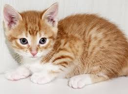

| CAT |
|
 |
A cat is a small, furry and friendly animal
that is often kept as a pet. Cats are known
for their graceful movements, sharp eyes
and clean habits. A baby cat is called a
kitten. They love to sleep, climb and play.
Cats are carnivores, and they usually eat
fish, milk and small animals like mice. Cats
are
also good at catching rats.
|